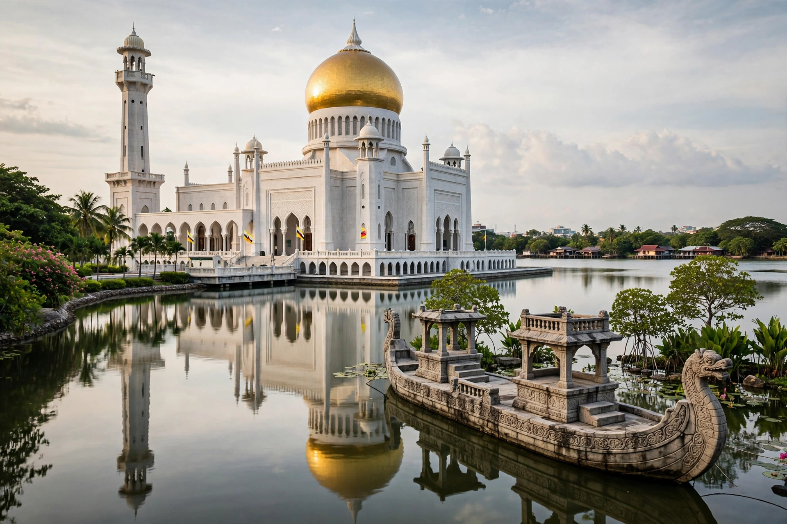

[Image placeholder: The Omar Ali Saifuddien Mosque in Bandar Seri Begawan]| Official name | Nation of Brunei, Abode of Peace |
|---|---|
| Capital | Bandar Seri Begawan |
| Government | Absolute monarchy — Sultan Hassanal Bolkiah |
| Population | About 450,000 |
| Economy | Oil and gas |
| Currency | Brunei dollar (BND), pegged to the Singapore dollar |
**Brunei** is a small, wealthy country on the north coast of the island of Borneo in Southeast Asia, completely surrounded by the Malaysian state of Sarawak (which splits it into two parts) and the South China Sea. Ruled by Sultan Hassanal Bolkiah, one of the world's last absolute monarchs and formerly among its richest men, Brunei's prosperity rests on crude oil and natural gas.
The sultanate was once a regional power — in the sixteenth century it controlled much of coastal Borneo and parts of the Philippines — before shrinking through the nineteenth century to a British protectorate (1888). It chose to remain a protectorate rather than join Malaysia in 1963 and gained full independence in 1984.
Citizens enjoy free healthcare and education, subsidised housing and no income tax; the official philosophy is Melayu Islam Beraja (Malay Islamic Monarchy). The capital Bandar Seri Begawan features the gold-domed Omar Ali Saifuddien Mosque and Kampong Ayer, a vast water village of stilt houses. The government has announced phases of Syariah law since 2014; severe penalties proposed in 2019 drew international criticism and a stated moratorium on the death penalty.
Hydrocarbons provide the overwhelming majority of exports and government revenue; reserves are finite, and diversification into petrochemicals, Islamic finance and tourism proceeds slowly. The exclave of Temburong was connected to the mainland by a 30 km bridge opened in 2020.